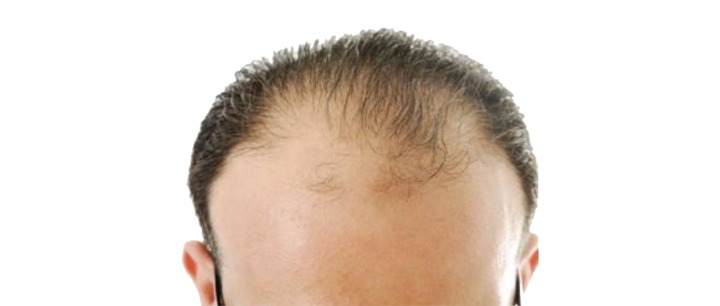
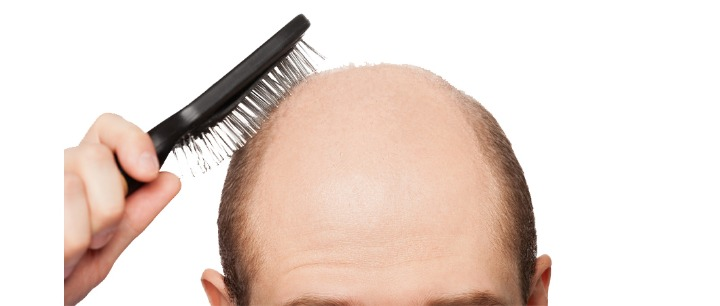
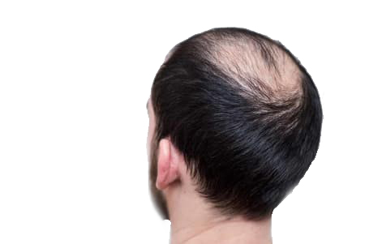

زراعة الشعر
تعتبر زراعة الشعر إجراءً تجميلياً شاع استخدامه في السنوات الأخيرة بتقنيات متطورة ودون شعور بالألم، ويتم ذلك عبر الاستعانة بمناطق أخرى مانحة من الجسم

الصلع الوراثي: الأسباب والأعراض وأفضل طرق العلاج 2021
جدول المحتويات
- ما هو الصلع الوراثي؟
- متى يبدأ الصلع الوراثي عند الرجال؟
- أعراض الصلع الوراثي
- أفضل طرق علاج الصلع الوراثي 2021

ما هو الصلع الوراثي؟
الصلع الوراثي ليس مرضاً، لكنه حالة طبيعية، فالصلع الوراثي هو السبب الأكثر شيوعاً لتساقط الشعر، الذي ينتج عن مزيج من الوراثة والهرمونات والشيخوخة. وتسمى هذه الحالة أيضاً ثعلبة الذكورة، أو الصلع الذكوري.
متى يبدأ الصلع الوراثي عند الرجال؟
يبدأ تساقط الشعر عادة في العشرينات والثلاثينات من العمر، ولكنه يظهر بشكل أوضح في الأربعينات.
أعراض الصلع الوراثي
يبدأ الصلع الوراثي حين تزيد نحافة الشعر شيئاً فشيئاً، ويتطور غالباً لتساقط الشعر بالكامل من أجزاء من فروة الرأس.
تساقط الشعر على الوسادة أو المشط من أعراض الصلع الوراثي غير الدقيقة. حيث يفقد الشخص في الأحوال العادية 100 شعرة يومياً، وقد يسقط المزيد من الشعر في ظروف معينة، مثلاً بعد الولادة عند النساء، أو بعد مرض خطير.
ومن أعراض الصلع الوراثي أنه يبدأ تساقط الشعر في الصدغ وتاج الرأس، ويتابع على شكل حرف M في المراحل الأكثر تقدماً، حيث يتبقى الشعر على طول الجانب، ومؤخرة فروة الرأس فقط.

أفضل طرق علاج الصلع الوراثي 2021
1.علاج الصلع الوراثي بالثوم
قم بتقشير رأس ثوم، واطحنه، ثم ادهنه على المناطق المصابة، تابع العملية في كل يوم مرتين، الاستمرار على ذلك يحفز الشعر على النمو من جديد؛ لأن الثوم يعد من الأطعمة الصحية التي لها فاعلية كبيرة في نمو الشعر وعلاج الصلع الوراثي.
2.ديرما رولر لعلاج الصلع الوراثي
إذا كنت تعاني من الصلع أو زيادة في نحافة الشعر أو تساقط الشعر، فإن ديرما رولر يمكن أن يساعد في نمو الشعر. حيث يتم استخدامها لتحفيز نمو الشعر، ويمكن استخدامها في معالجة تساقط الشعر بطريقتين مختلفتين:
باستخدام علاجات تساقط الشعر
إن استخدام ديرما رولر مباشرة قبل أو بعد استخدام المينوكسيديل، أو أي علاجات أخرى لتساقط الشعر يزيد بشكل كبير من معدل امتصاصه، مما يجعله أكثر فاعلية في علاج تساقط الشعر، مما لو كان يستخدم بدون ديرما رولر.
بدون استخدام علاجات تساقط الشعر
يمكن أن تعزز ديرما رولر نمو الشعر الجديد دون استخدام المينوكسيديل أو علاجات تساقط الشعر. وفي هذه الطريقة يساعد ديرما رولر على زيادة تدفق الدم إلى بصيلات الشعر، وتنشيط عملية تجدد البشرة الطبيعي.
3.أفضل بخاخ لعلاج تساقط الشعر الوراثي
يوجد الكثير من الخيارات الفعالة التي تقوم بأساليب وطرق مختلفة على إيقاف أو إبطاء تساقط الشعر، وذلك عن طريق منع أو إيقاف ضمور تجاويف بصيلات الشعر، بمنع الهرمونات المسؤولة عن ذلك، أو بزيادة تدفق الدم، التي بدورها تؤدي إلى توقف أو إبطاءٍ في تساقط الشعر، وتحسين نمو شعر جديد.

4.شامبو للصلع الوراثي
الشامبو هو أحد المنتجات الشبيهة بعمل البخاخات والكريمات الموضعية وغيرها، وهي عبارة عن "مضادات ذكورية"، مما يعني أنها تمنع الهرمونين المرتبطين بتساقط الشعر - التستوستيرون وديهدروتستوستيرون (DHT) –، اللذيَن يستهدفان نمو الشعر في موقع المسام، ويساعدان في قطع الدورة الهرمونية محلياً.
قد لا يكون قادراً على إعادة نمو الشعر، لكن الشامبو يجعل الشعر يبدو أكثر كثافة.
5. أفضل الزيوت للصلع الوراثي (غير طبي)
زيت الخروع لعلاج الصلع الوراثي
يحتوي زيت الخروع على العديد من مضادات الفطريات والالتهابات والجراثيم، والأحماض الدهنية أوميغا 6، وفيتامينE ، التي تساهم في الحفاظ على صحة فروة الرأس، وعلاج العديد من المشاكل المختلفة التي تصيب فروة الرأس مثل القشرة.
كما أن لزيت الخروع القدرة على علاج الصلع، بسبب ما يحتويه من حمض الريسينولك الذي يسمى بالإنجليزية (Ricinoleic acid)، والذي يساهم في إنتاج مركب البروستاجلاندين الذي يحفز بدوره نمو بصيلات الشعر.
زيت الزيتون لعلاج الصلع الوراثي
زيت الزيتون من الأطعمة الصحية المفيدة لصحة الإنسان، وأحد أفضل الزيوت الطبيعية للتخلص من مشكلة الصلع.
زيت جوز الهند لعلاج الصلع الوراثي
يحتوي زيت جوز الهند على خصائص طبيعية تعمل على تحفيز نمو الشعر وتمنع الصلع.
زيت الروزماري
يحتوي زيت الروزماري أو إكليل الجبل على خصائص مضادة للأكسدة، تحفز نمو الشعر، كما أنه يحتوي على الكبريت والسيليكا، اللذين لهما دور فعال في منع تساقط الشعر.
كما أثبتت بعض الدراسات فائدة استخدام خليط من الزيوت العطرية مثل: إكليل الجبل، والزعتر، واللافندر، لعلاج مرض الثعلبة.
وأكدت دراسة أخرى فائدة زيت إكليل الجبل في علاج الصلع الوراثي، ولكن يمكن أن يسبب بعض الأعراض الجانبية كالحكة.
6. زراعة الشعر لعلاج الصلع الوراثي
زراعة الشعر هي الطريقة الأنسب والأكثر ديمومة للذين يعانون من تساقط الشعر. وهو أفضل علاج للصلع الوراثي.
حيث يتم زرع شعر صحي في مناطق تساقط الشعر. فالمنطقة التي يتم أخذ الشعر منها هي منطقة مقاومة لتساقط للشعر.
لذا يستعيد المرضى شعرهم بشكل دائم عن طريق زرع الشعر كما لو أنهم لم يفقدوه أبداً.
هدفنا في زراعة الشعر هو توفير مظهر شعر طبيعي للمريض بطريقة مريحة مع إجراءات طبية حديثة.


تحرير: علاجك الطبية©
اطلع على أحدث المنشورات والأخبار الطبية
عمليات شفط الدهون بالفيزر في تركيا والأسعار 2021
يعتبر شفط الدهون بالفيزر من أفضل عمليات علاج السمنة المفرطة. تعرف معنا على مميزات وعيوب شفط الدهون بالفيزر وكيف تتم العملية وشاهد الفرق قبل وبعد في تركيا.
طرق علاج طول النظر في تركيا وأحدث التقنيات
يعاني الكثير من كبار السن وحتى البالغين من مرض طول النظر . سنتحدث في هذا المقال عن كيفية علاج طول النظر وأسباب هذا المرض ونسبة نجاح العلاج .
الفرق بين زراعة الشعر في ايران وتركيا 2021
بالرغم من أن أسعار زراعة الشعر بين تركيا وايران لا تختلف كثيرا إلا أن هنالك الكثير من الفروق التي قد تحدد لك الدولة الأفضل لزراعة الشعر فيها.
طرق علاج قصر النظر في تركيا وأحدث التقنيات
يعاني الكثير من الأطفال وحتى البالغين من مرض قصر النظر. سنتعرف في هذا المقال على أفضل طرق علاج قصر النظر وأسباب هذا المرض ونسبة نجاح العلاج .